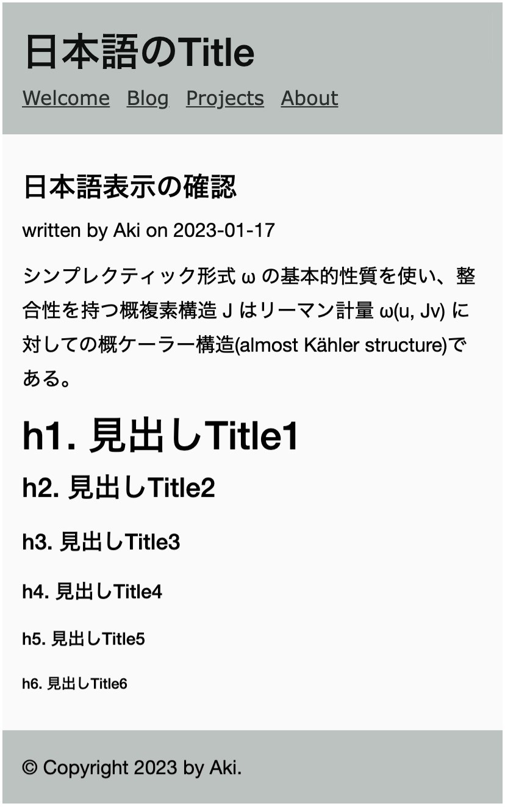

Webページにおける日本語のタイポグラフィは、製作者によって方針が異なるようですが、一つの例として見て下さい。
"Noto Sans JP"、ウエイトは500"YU Gothic Medium" を指定Verdana を指定基本的な文書要素のスタイルを記述するbase.cssを作成します。
:root {
--font-heading: "Noto Sans JP", sans-serif;
--font-verdana: Verdana, sans-serif;
--font-body: -apple-system, "Helvetica Neue", "Segoe UI", Roboto, "Hiragino Sans", "Hiragino Kaku Gothic Pro", "Yu Gothic Medium", "YU Gothic", "Meiryo", sans-serif, "Apple Color Emoji", "Segoe UI Emoji", "Noto Color Emoji";
--fontsize-root: 16px;
--fontsize-1: calc(.125rem * 16); /* 2rem */
--fontsize-2: calc(.125rem * 11); /* 1.375rem */
--fontsize-3: calc(.125rem * 9); /* 1.125rem */
--fontsize-4: calc(.125rem * 8); /* 1rem */
--fontsize-5: calc(.125rem * 7); /* 0.875rem */
--fontsize-6: calc(.125rem * 6); /* 0.75rem */
--spacing-1: .5rem;
--spacing-2: calc(.5rem * 2);
--spacing-3: calc(.5rem * 3);
--spacing-4: calc(.5rem * 4);
--spacing-5: calc(.5rem * 5);
--spacing-6: calc(.5rem * 6);
}
*,
*::before,
*::after {
box-sizing: border-box;
}
html {
font-size: var(--fontsize-root);
line-height: 1.75;
}
body {
margin: 0;
}
h1 {font-size: var(--fontsize-1);}
h2 {font-size: var(--fontsize-2);}
h3 {font-size: var(--fontsize-3);}
h4 {font-size: var(--fontsize-4);}
h5 {font-size: var(--fontsize-5);}
h6 {font-size: var(--fontsize-6);}
h1, h2, h3, h4, h5, h6 {
line-height: 1;
font-family: var(--font-heading);
font-weight: 500;
margin-top: var(--spacing-3);
margin-bottom: var(--spacing-2);
}
googleのサイトから、Noto Sans JPのウィイト500を選択してリンクをコピーします。
コピーしたGoogle Fontのリンクをlayout.htmlのhead部分のstyle.cssの上に貼り付けます。その下にbase.cssのリンクを記述します。
<meta charset="utf-8">
<meta name="viewport" content="width=device-width, initial-scale=1.0">
<link rel="preconnect" href="https://fonts.googleapis.com">
<link rel="preconnect" href="https://fonts.gstatic.com" crossorigin>
<link href="https://fonts.googleapis.com/css2?family=Noto+Sans+JP:wght@400;500&display=swap" rel="stylesheet">
<link rel="stylesheet" href="{{ '/static/base.css'|url }}">
<link rel="stylesheet" href="{{ '/static/style.css'|url }}">
<link rel="stylesheet" href="{{ '/static/custom.css'|url }}">
<title>{% block title %}Welcome{% endblock %} — test</title>
style.cssのフォント指定を上書きします。
/* override font */
body {
font-family: var(--font-body);
}
header h1 {
line-height: 1.5;
font-weight: 500;
font-size: var(--fontsize-1);
}
header nav ul {
font-family: var(--font-verdana);
}
layout.htmlにあるヘッダーのタイトルをlektor-demoから「日本語のTitle」へ書き換えます。
<body>
<header>
<h1>lektor-demo</h1>
<h1>日本語のtitle</h1>
<nav>
日本語の表示を確認するため、ブログに新規記事を作成します。タイトルを「日本語表示の確認」とし、記事を下記のbodyからコピーして貼り付けます。（文章はダミー文です。）
日本語表示の確認
シンプレクティック形式 ω の基本的性質を使い、整合性を持つ概複素構造 J はリーマン計量 ω(u, Jv) に対しての概ケーラー構造(almost Kähler structure)である。
# h1. 見出しTitle1
## h2. 見出しTitle2
### h3. 見出しTitle3
#### h4. 見出しTitle4
##### h5. 見出しTitle5
###### h6. 見出しTitle6
### h3 概複素構造 J
M はシンプレクティック形式 ω を持ち、リーマン計量 g を持ち、概複素構造 J を持っているとする。ω と g 非退化であるから、それぞれはバンドル同型 TM → T*M を引き起こし、第一の写像を φω と書くと、内積 φω(u) = iuω = ω(u, •) により与えられる。
ブラウザで日本語表示を確認します。
